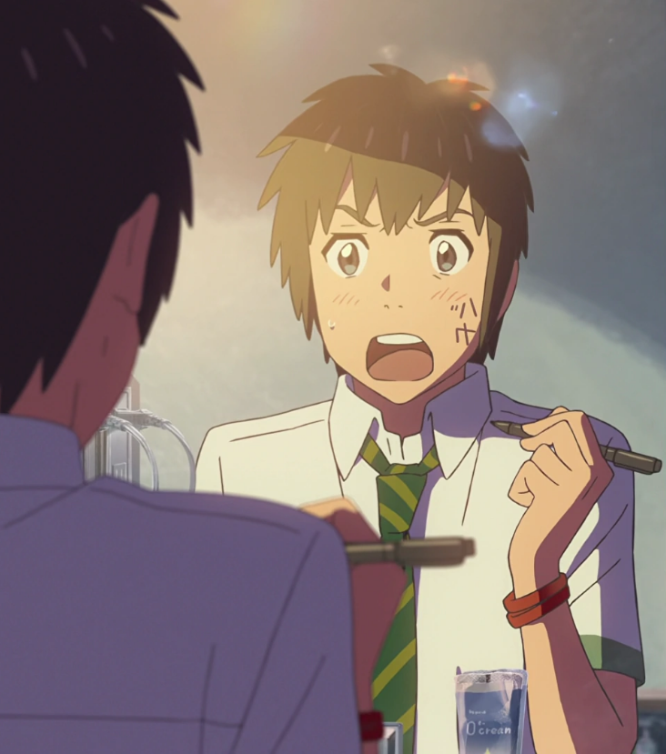
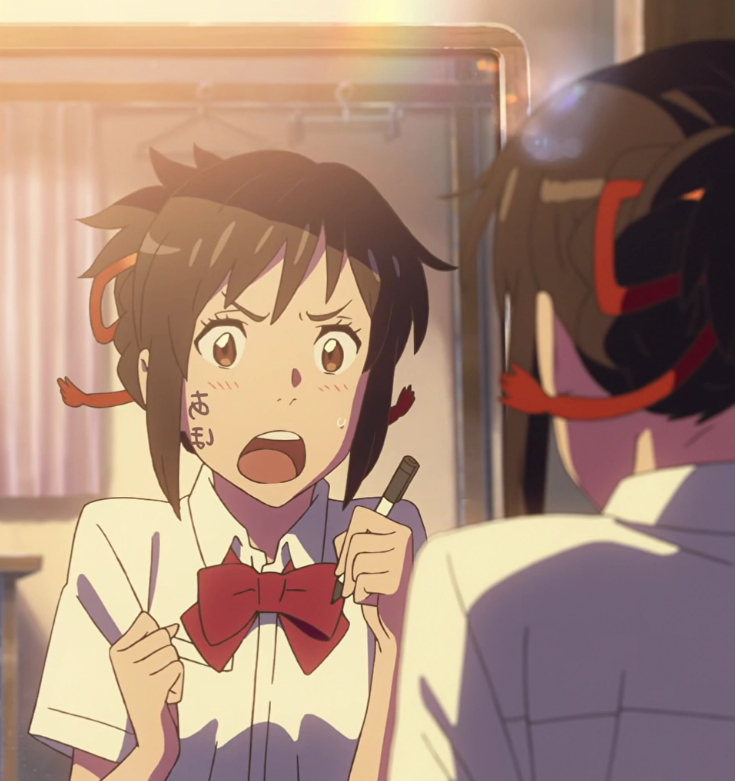

Duas vidas que nunca deveriam se cruzar
Taki vive em Tóquio, enquanto Mitsuha sonha em deixar a pequena cidade onde mora e conhecer uma vida completamente diferente. Sem entender como ou por quê, os dois começam a acordar no corpo um do outro, vivendo partes da rotina de alguém que nunca conheceram.
O que começa como uma situação estranha e até divertida logo se transforma em algo muito maior. Aos poucos, eles percebem que existe uma ligação entre suas vidas que nenhum dos dois consegue explicar.
É justamente quando essa conexão começa a fazer sentido que Your Name deixa de ser apenas uma história curiosa e se torna o tipo de filme que você precisa assistir para entender por que tanta gente nunca esqueceu dele.
